My project is an emotional and subjective approach to the quantified self movement. Symbolically, each poster I created represents a mountain that I have conquered. The topographic maps that go with these mountains provide details of the day I conquer each mountain.
Mountain consists of a series of seven 13x19 Posters and seven 6x6 Topographic Maps. Maps includes data collected during the workout day. The "tangible" data that I have collected includes the date, weather and time. The maps and posters also include more subjective data such as the drawn shape of the mountain, the keyword associated to the day and the given color. Additionally, each map includes a "Highest Point". The numbers associated to this point is the total amount of pounds (lbs) I have lifted during the workout.
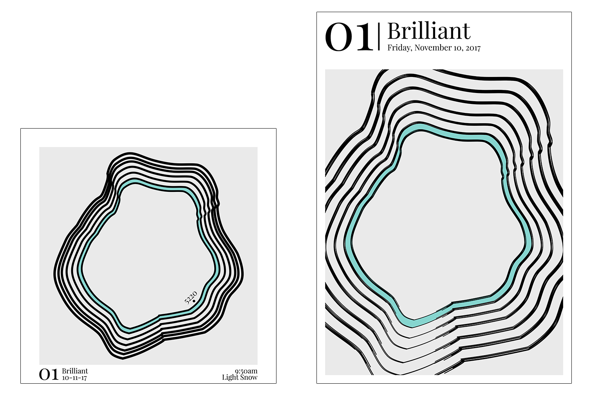 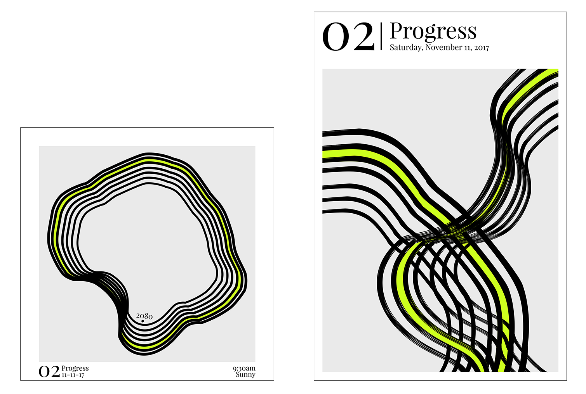
 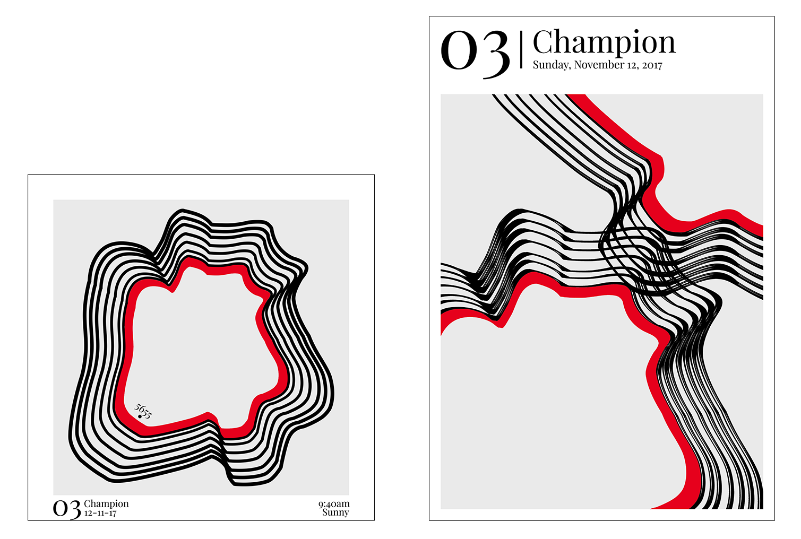
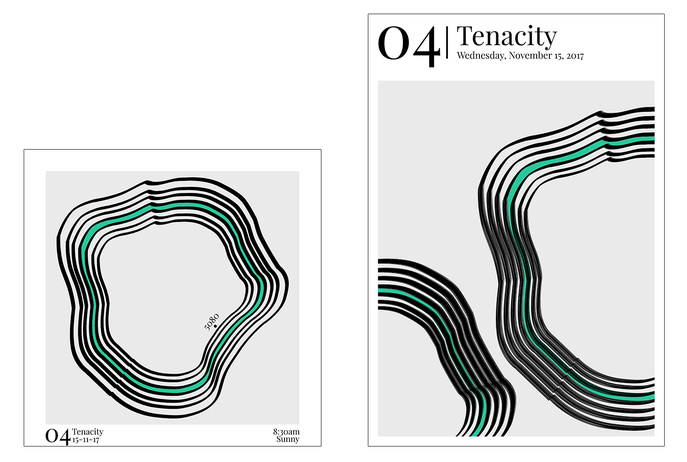
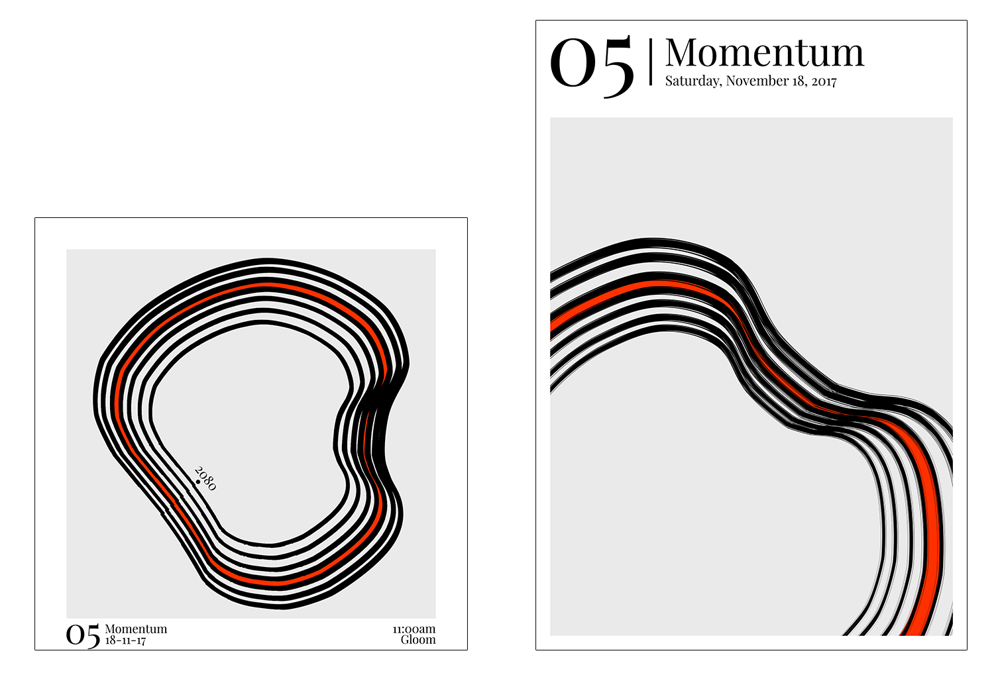
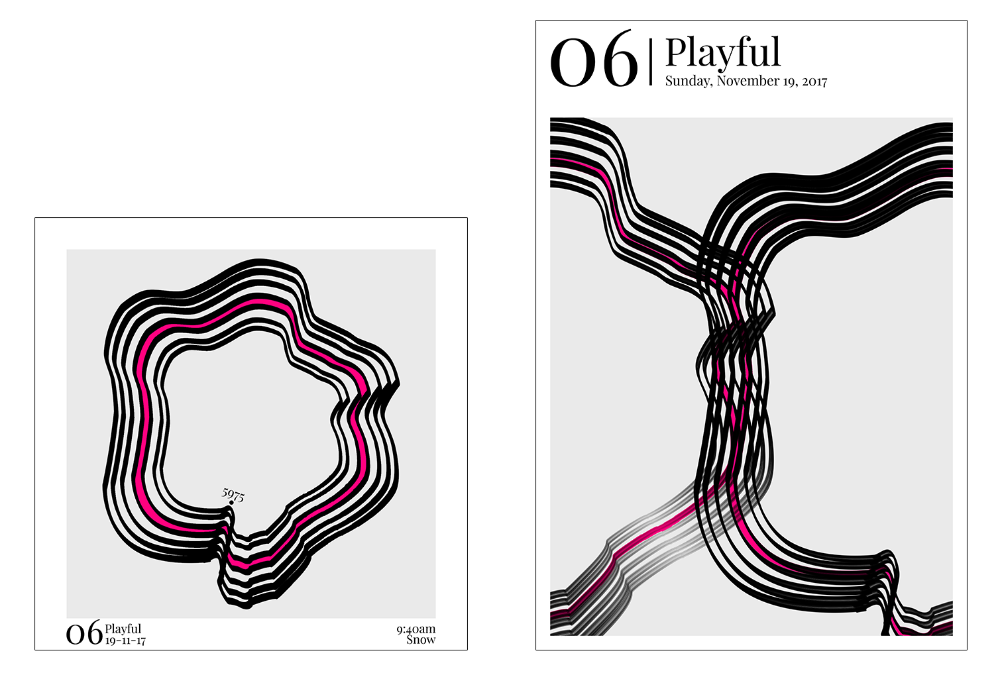
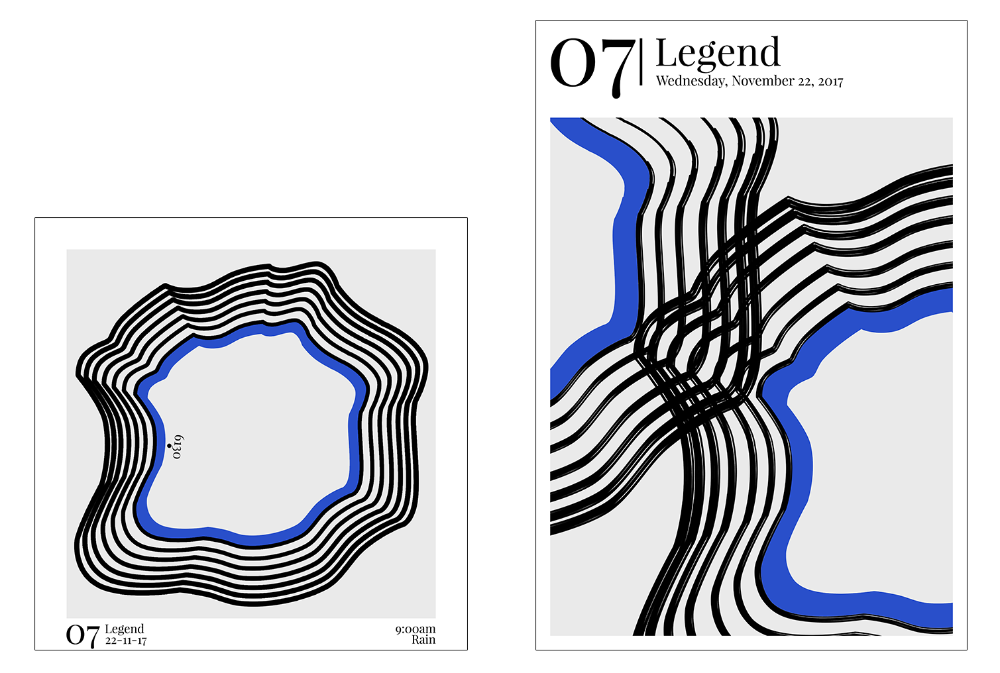
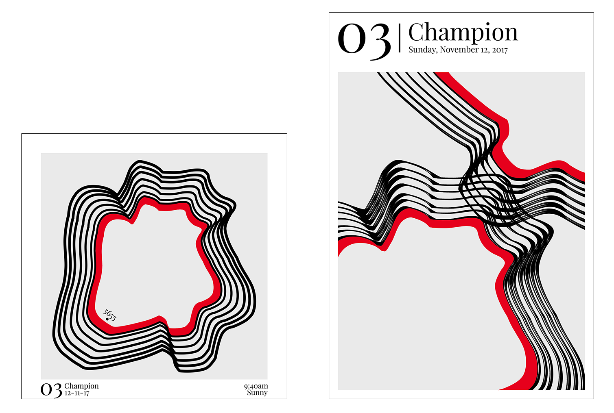
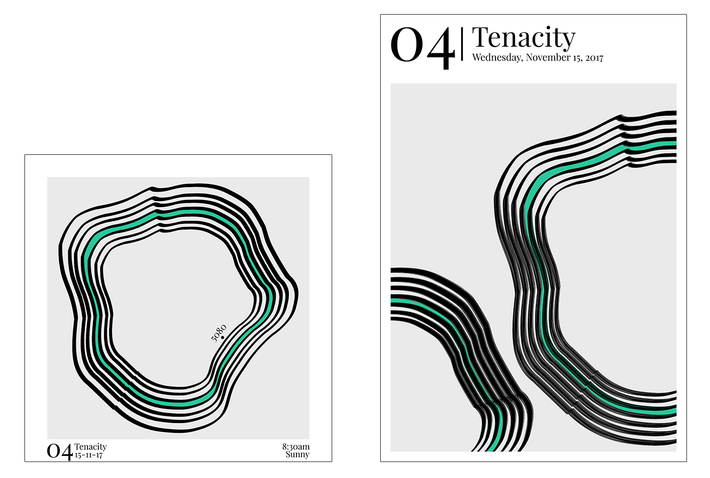
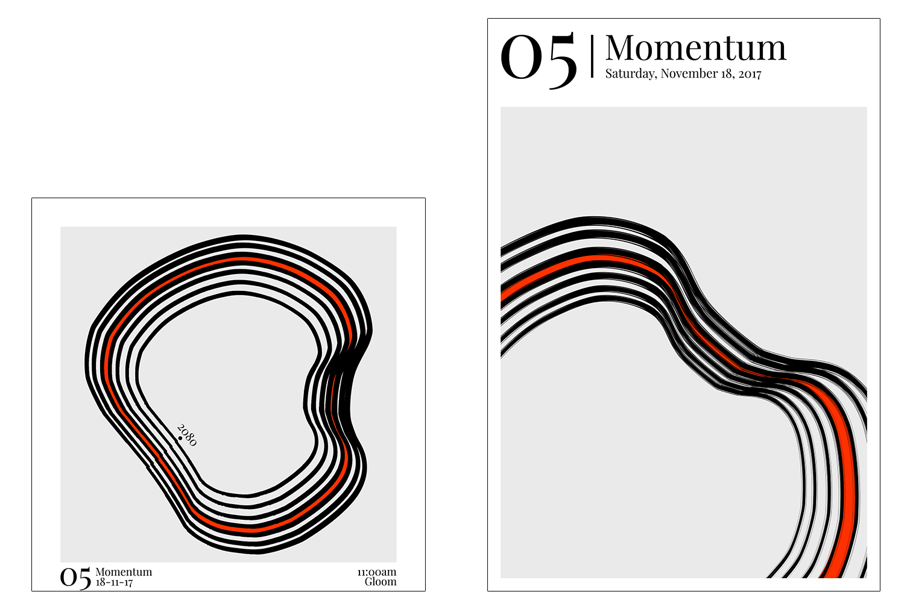
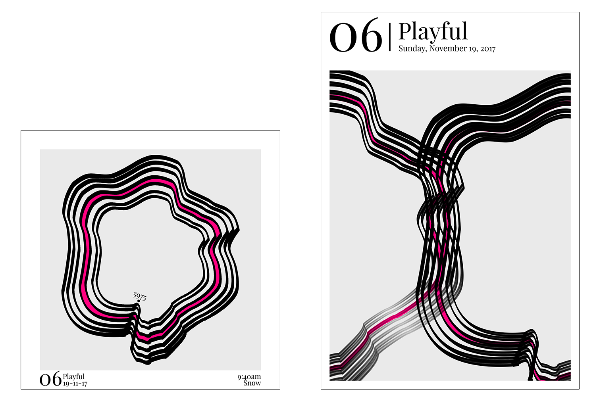
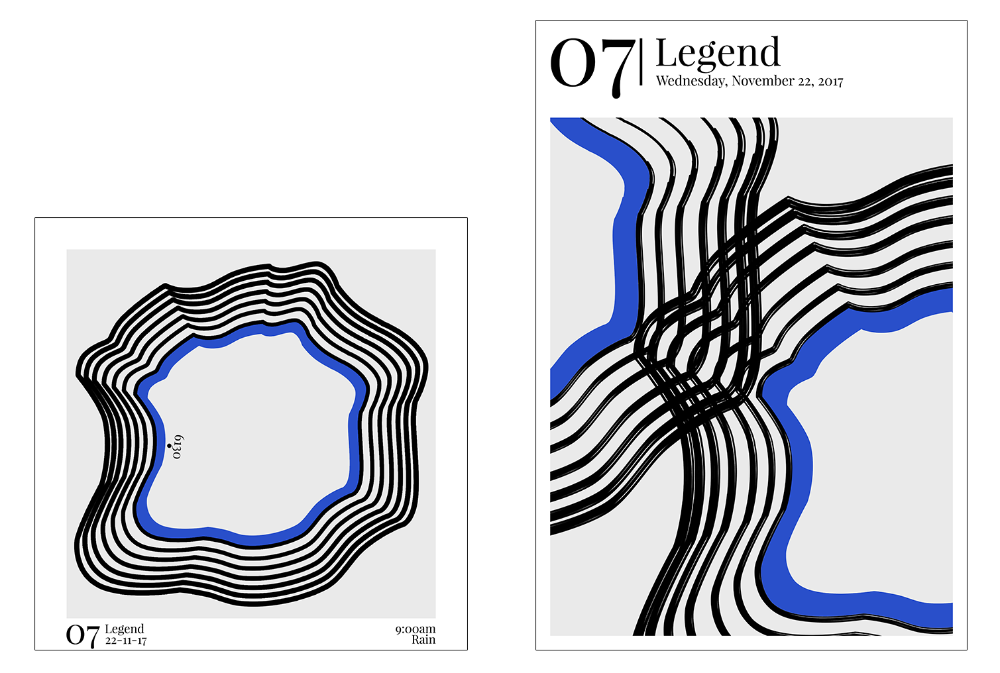